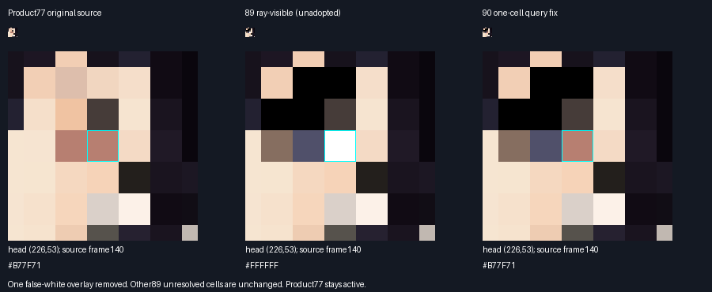
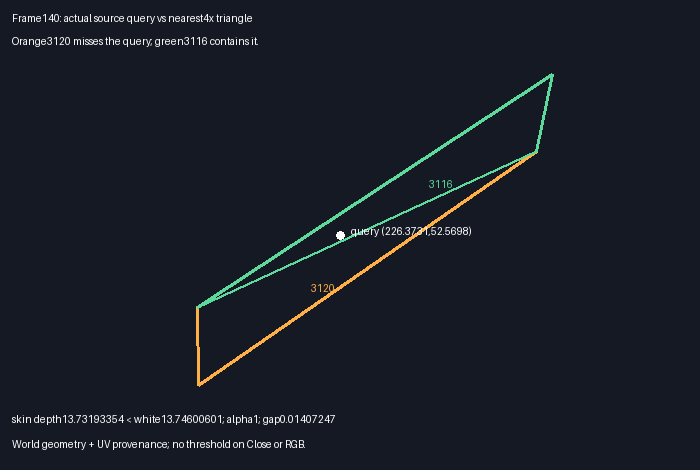

제품 77 유지 · 새 Play/캡처 0 · 89 전체 후보는 미채택. 이 결과는 저장된 실제 프레임의 한 셀 원인 수정과 격리 GPU 합성 검증입니다. 전체 눈·시간 안정성·미관 완성의 증거는 아닙니다.
source eye89-20261101T121649399Z-a2061c6c-frame140, serial 47. 특징 로컬 셀 (5,0), 이전 raster (13,5), 최종 head 셀 (226,53)입니다. 다른 좌표계를 같은 좌표처럼 비교하지 않습니다.
시안 테두리 안 4개 native 출력 픽셀만 바뀝니다. 1배 crop과 nearest 20배 확대를 함께 표시했습니다. 중간·오른쪽의 다른 검은 부분과 미확정 출력은 수정 대상이 아닙니다.

| 항목 | 확인 결과 |
|---|---|
| 이전 덮어쓰기 → 원래 피부 보존 | #FFFFFF → #B77F71, 4 native pixels |
| 대상 밖 RGB 변경 / GPU 예상 오차 | 0 / 0 |
| 선택된 색 | 기존 유한 P[k] 직접 출력. 선택 0은 원본 baseline/owner/depth 보존이며 새 owner 0 생성이 아님 |
| 남은 다른 89 미확정 출력 | 56 native pixels. 그대로 보존했고 전체 성공으로 세지 않음 |
대표 source 표본은 native 흰자 primitive 344, UV (0.8335106,0.2682029), 실제 투영 (226.3731,52.5698), depth 13.74600601입니다. 이전 nearest 4× 표본이 선택한 피부 primitive 3120은 이 query를 포함하지 않았습니다. 실제 교차 피부는 인접 primitive 3116이며 depth 13.73193354, 앞쪽 간격 0.01407247입니다. 원본 재질의 실제 alpha 1도 확인했습니다.

analyse89.visibility는 놓친 삼각형을 unknown으로 표시했지만 scalar joint가 unknown을 선택 차단에 쓰지 않아 흰자 role을 남겼습니다. 이전 최종 validity도 이미 해당 출력을 미확정으로 표시했습니다. 90은 실제 ray 교차와 alpha로 가시량을 제한하고, 미확정은 [0,1] 구간으로 남깁니다. Close getter·색·최소 픽셀 수로 흰자를 삭제하지 않습니다.
실제 메쉬가 닫힌 frame140/141의 흰자 가시량 상한은 0입니다. frame141의 Close getter는 이미 0이지만 메쉬는 아직 닫혀 있어 같은 결과가 나옵니다. 실제 재개방142는 open135와 같은 가시량 범위로 복귀합니다. 열린 눈의 나머지 안검/다른 가림 불확실성은 남아 있습니다.
89의 Independent333.meta.y는 role+1입니다. skin3의 encoded4를 흰자4로 오독하여 backing에서 잘못 제외했습니다. 기존 224 “부재” 표본은 실제로 128개 잘못 제외 + 96개 Base/Backing 부재로 분리됩니다. 단위는 32프레임×2후보에 누적된 native 표본이며 고유 화면 셀 수가 아닙니다.
frame140의 관련 9 head 셀은 실제 피부 데이터가 있는 5셀과 없는 4셀로 나뉩니다. 남은 (217,52),(217,53),(218,52),(218,53)은 기존 333 포즈 캐시가 열린 눈 상태인 반면 현재 evaluated S0는 닫힌 피부입니다. 348 전 baseline도 이미 333 눈 합성 이후이므로 숨은 피부 원색으로 사용할 수 없습니다. 현재 4× S0 피부색은 있지만 목표 raster의 typed backing/안검 owner와 동등하지 않아 임의 평균·채움을 하지 않았습니다.
연속 명암 최대 차이 0.0668288618는 아직 미해결입니다. g의 생산자별 normalWS/SH/direct·additional light 합계가 저장되지 않았습니다. Q와 factor 일치만으로 g 일치를 주장하거나 색 보정하지 않습니다.
15개 합성·실제 저장 반례 검사 통과. GPU 3필드 예상값 완전 일치. RT 30→30, 소유 자원 해제, Edit·InputSettings 객체/22필드·옵션·scene·dirty 목록 동일. 신규 Console 차이 없음. 내부 allocated +96,527B는 물리 RAM/누수 판정이 아닙니다.
전체 원본 32프레임은 이전 커밋 409a6dbca90adf21b34c8ed5c926a83970ffec47의 raw89.zip 및 이전 INDEX를 참조합니다. 이번 portable 검사는 포함된 작은 witness/packet만 사용하며 Unity 호출·쓰기·원본 89 재분석을 하지 않습니다.